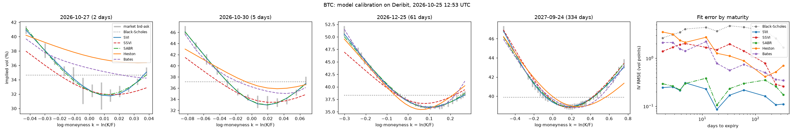
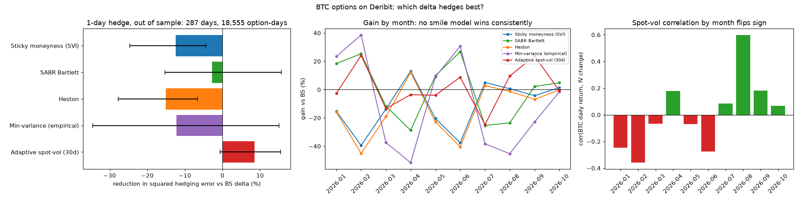
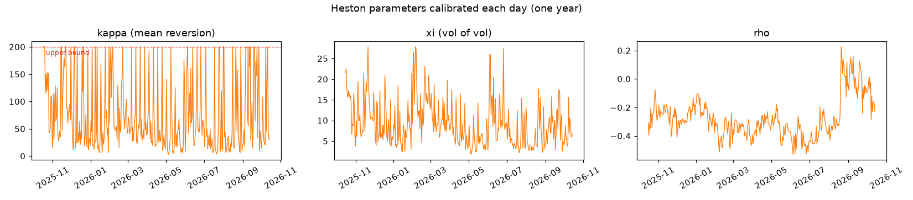

| Model | Intended use | Decision | Evidence | Conditions |
|---|---|---|---|---|
| SVI (per expiry) | Marking and interpolating the daily smile | Approved with conditions | Median IV error 0.21 vol pts, 99% of quotes inside bid-ask, 0 butterfly and 0 calendar violations on the latest surface. | Run the arbitrage checks on every fit; do not use the fitted smile as a model of smile dynamics (sticky-moneyness delta loses 12% vs BS). |
| SSVI (global) | Arbitrage-free benchmark and extrapolation | Approved with conditions | Arbitrage-free by construction; median IV error 1.51 vol pts. | Not for marking short-dated options: one skew parameter misses the short-dated put skew. |
| SABR, beta = 1 (per expiry) | Marking; delta with Bartlett correction | Approved for marking; hedge not approved | Median IV error 0.26 vol pts. Bartlett delta -2.8% vs BS (-15.3 to +15.6%). | Bartlett delta wins only when spot-vol correlation is negative; do not use as the default hedge. |
| Heston (global) | Pricing and hedging across expiries | Not approved | Median IV error 1.27 vol pts with implausible parameters (kappa at the 200 bound on 15% of days); delta -15.1% vs BS (-27.8 to -6.7%). | Do not use; jumps (Bates) improve the fit but not the dynamics, see F8. |
| Bates (Heston + jumps) | Pricing and hedging across expiries | Not approved | Median IV error 0.78 vol pts (Heston 1.27). Fits by pricing a rare crash (0.55 per year, mean jump -9%) while kappa stays near 23; delta -15.0% vs BS (-26.5 to -6.7%). | Use only as a cross-maturity pricing benchmark; jump parameters are identified only as a combination (F8). |
| Black-Scholes, sticky strike | Default delta hedge | Approved | Benchmark that no fixed smile-dynamics delta beats over the year. | Keep as the production delta; monitor challengers. |
| Adaptive spot-vol delta (30 days) | Challenger hedge | Monitor | +8.5% vs BS (-0.7 to +15.4%); beats BS on only 46% of days. | Track for another 6 months; promote only if the interval excludes zero. |
The models are assessed for two uses: marking (producing an implied-volatility surface consistent with the market and free of static arbitrage) and hedging (producing a delta that minimises the one-day hedging error). Out of scope: exotic pricing, vega hedging, transaction costs and capital.
| Dataset | Source | Size | Use |
|---|---|---|---|
| Live option chains | Deribit public API (no key), snapshot daily at 08:00 UTC | latest: 864 options, 11 expiries | Fit, arbitrage, identifiability |
| Historical chain states | Rebuilt from Deribit trade history: marks, trade IV, index | 365 daily windows (07:00 to 09:00 UTC) | Hedging backtest, parameter history |
| Hedging pairs | Same option observed on consecutive days | 24,329 pairs, 18,555 in the out-of-sample test | Outcome analysis |
Cleaning. Only out-of-the-money options with a two-sided market and |delta| of at least 5% are used; deep-wing quotes are mostly tick rounding. Forward. Deribit prices options in coin on the forward of each expiry. The historical forward is recovered from each trade's price and Deribit's IV (one equation, unique root). Checked against live forwards, the error is below 0.5 bp of the forward.
| Model | Key assumption | Known weakness |
|---|---|---|
| SVI | Smile per expiry; Lee moment bound; Durrleman butterfly condition checked | Static: says nothing about how the smile moves |
| SSVI | Global surface, arbitrage-free under Gatheral-Jacquier conditions | One skew parameter for all maturities |
| SABR (beta = 1) | Lognormal forward with stochastic vol per expiry | Hagan expansion; per-expiry parameters |
| Heston | Mean-reverting stochastic variance, no jumps | Cannot produce steep short-dated smiles without jumps |
| Bates | Heston plus lognormal jumps (Merton) | Eight parameters; jump size, frequency and dispersion trade off |
| BS sticky strike | Each option keeps its own IV when spot moves | Ignores spot-vol co-movement |
23 of 23 automated tests pass in this run. Key checks against independent references:
| Check | Result |
|---|---|
| Heston COS price vs published Fang & Oosterlee (2008) value 5.785155450 | pass |
| Heston COS vs independent numerical integration (2 to 365 days) | pass |
| Heston reduces to Black-Scholes when vol of vol is zero | pass |
| Calibration recovers known Heston parameters (synthetic data) | pass |
| Calibration recovers known SABR parameters (synthetic data) | pass |
| Bates with constant variance matches an independent Merton jump-diffusion series | pass |
| Bates without jumps equals Heston; characteristic function is a martingale | pass |
| Calibration recovers known Bates parameters (synthetic data) | pass |
| Durrleman check flags the known arbitrage slice (Gatheral & Jacquier 2014) | pass |
| Sticky-moneyness delta equals total derivative | pass |
| Bartlett delta equals derivative with alpha following the forward | pass |
| Forward inference round-trip on Deribit coin prices | pass |
| Min-variance regression recovers known coefficients | pass |
Latest snapshot BTC_20261025T1253Z.csv.gz: 284 usable quotes from 2 to 334 days. SVI shows 0 butterfly and 0 calendar arbitrage violations.
| Model | Median IV error (vol pts) | Quotes inside bid-ask |
|---|---|---|
| Black-Scholes | 3.67 | 10% |
| SVI | 0.21 | 99% |
| SSVI | 1.51 | 47% |
| SABR | 0.26 | 92% |
| Heston | 1.27 | 20% |
| Bates | 0.78 | 41% |

One-day delta hedges for every out-of-the-money option observed on consecutive days. Gain = 1 - SSE(model) / SSE(BS). Empirical deltas are fitted only on earlier months. Intervals: bootstrap over whole days.
| Delta | Gain vs BS | 95% interval | Gain, vega-scaled | Days beating BS |
|---|---|---|---|---|
| BS (sticky strike) | benchmark | |||
| Sticky moneyness (SVI) | -12.4% | -24.7 to -4.4% | -8.5% | 45% |
| SABR Bartlett | -2.8% | -15.3 to +15.6% | -2.0% | 55% |
| Heston | -15.1% | -27.8 to -6.7% | -10.2% | 42% |
| Bates | -15.0% | -26.5 to -6.7% | -10.4% | 43% |
| Min-variance (empirical) | -12.2% | -34.6 to +15.1% | -5.9% | 44% |
| Adaptive spot-vol (30d) | +8.5% | -0.7 to +15.4% | +5.2% | 46% |

Within a day: quotes redrawn uniformly inside their bid-ask spreads and Heston refitted 20 times. Parameters move by at most 2.9%: the data pins them down, so the misfit is not estimation noise.
| Heston parameter | Mean | Std | Coefficient of variation |
|---|---|---|---|
| v0 | 0.141 | 0.000 | 0.2% |
| kappa | 9.583 | 0.277 | 2.9% |
| theta | 0.190 | 0.001 | 0.3% |
| xi | 3.058 | 0.050 | 1.6% |
| rho | -0.248 | 0.002 | 0.7% |
Bates, 10 refits: the jump parameters move more and are almost perfectly correlated with each other (|correlation| 1.00); the combined jump variance is far more stable than its parts.
| Bates parameter | Mean | Std | Coefficient of variation |
|---|---|---|---|
| v0 | 0.122 | 0.006 | 5.0% |
| kappa | 22.722 | 7.237 | 31.8% |
| theta | 0.105 | 0.020 | 19.2% |
| xi | 0.671 | 0.294 | 43.8% |
| rho | -0.908 | 0.260 | 28.7% |
| lam | 0.551 | 0.606 | 109.9% |
| muj | -0.197 | 0.042 | 21.5% |
| sj | 0.436 | 0.107 | 24.6% |
| jump variance per year | 0.091 | 0.014 | 14.8% |
Across days: over the backtest year, Heston's kappa reached its upper bound on 15% of days.

| ID | Severity | Area | Finding | Recommendation |
|---|---|---|---|---|
| F1 | High | Heston | Fitting BTC smiles requires implausible dynamics (median kappa 47, vol of vol 8.0) and still misprices short-dated options; parameters are tightly identified (bootstrap CV 3% or less), so this is model misspecification, not noise. | Do not use. A jump extension (Bates) was tested, see F8. |
| F2 | High | Smile-dynamics deltas | Spot-vol correlation changes sign between months (-0.36 to +0.60). Every fixed assumption wins in one regime and loses in the other. | Keep sticky-strike as default; evaluate regime-adaptive deltas. |
| F3 | Medium | Sticky moneyness, Heston | Both imply that IV rises when BTC rises; over the year it fell. Hedging error is 12% and 15% worse than BS, intervals exclude zero. | Do not use sticky-moneyness deltas for BTC. |
| F4 | Medium | All hedges | Hedging errors are heavy-tailed: the worst 1% of option-days carry about 45% of the squared error. | Report robust metrics alongside SSE; stress-test on large-move days. |
| F5 | Medium | SSVI | One global skew parameter cannot match the short-dated BTC put skew (1 to 2 vol pts). | Use per-expiry SVI or SABR for short maturities. |
| F6 | Low | SVI implementation | Very short expiries produced degenerate fits (negative total variance, extreme deltas) until optimiser starts were scaled to the slice and total variance was bounded at zero. Fixed and covered by tests. | Keep the regression tests; alert on any |delta| > 1. |
| F8 | High | Bates | Adding jumps cuts the median IV error from 1.27 to 0.78 vol pts, but only by pricing a rare, very large crash (0.55 per year, mean jump -9%). The jump parameters trade off along a ridge (|correlation| 1.00 in the bootstrap); only combinations such as the jump variance (0.091 per year, CV 15%) are pinned down. The diffusion stays implausible (kappa 23). The objective has a second, much worse basin with frequent small jumps, and over the year the daily fit switches between the two: jump rate below 0.5 per year on 42% of days, at the 60 bound on 21%. Hedge: -15.0% vs BS (-26.5 to -6.7%), no better than Heston. | Not for hedging. Calibrate from several starts in both basins; report jump risk as a combination, not separate parameters. |
| F7 | Low | Data | Backtest uses Deribit marks, not executable quotes, with daily rebalancing and no costs; only options trading on both days are included. | Repeat with order-book snapshots when available. |
Marks are Deribit model prices, not executable quotes. Hedging is daily with no transaction costs. Option and forward are measured at each instrument's last trade in the window, and only options that trade on both days are included, which favours liquid strikes. Results cover BTC only.